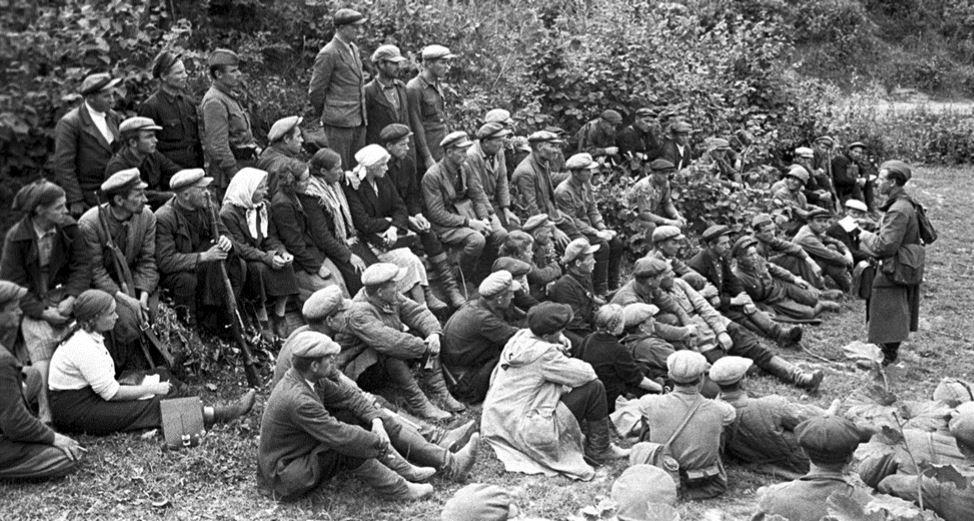
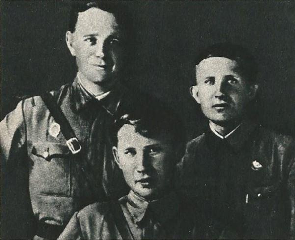
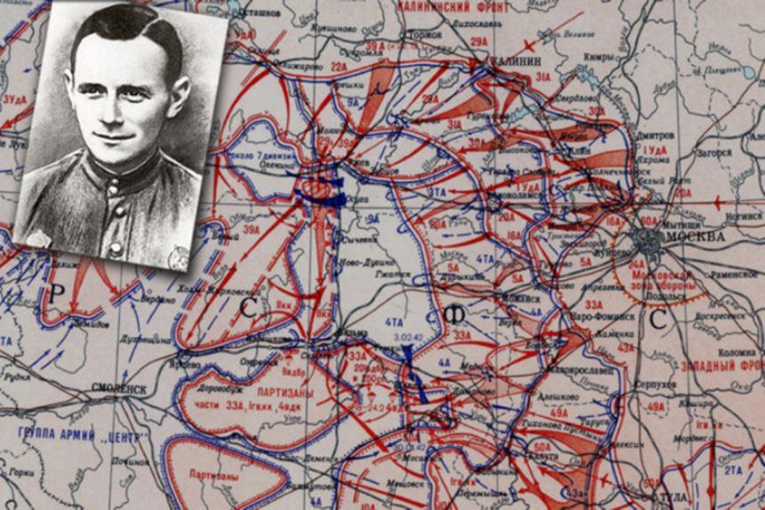
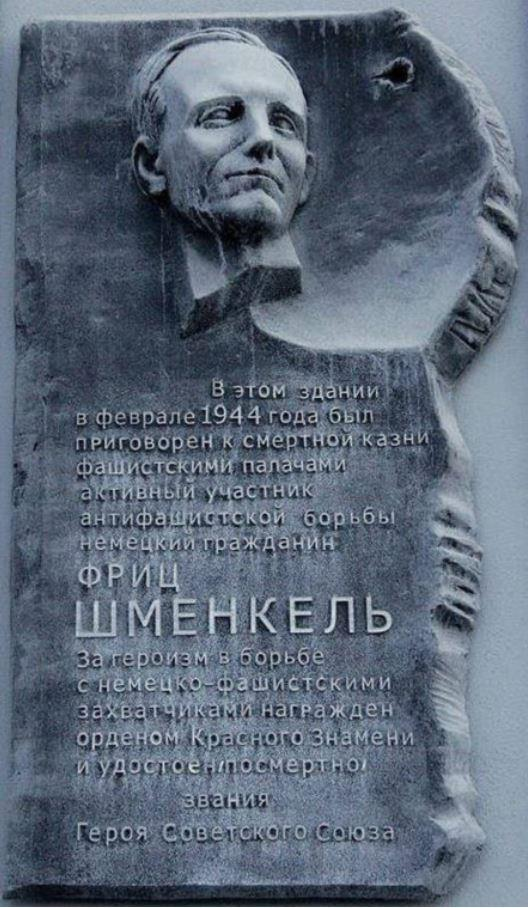
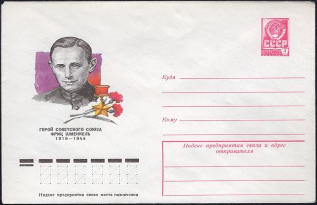
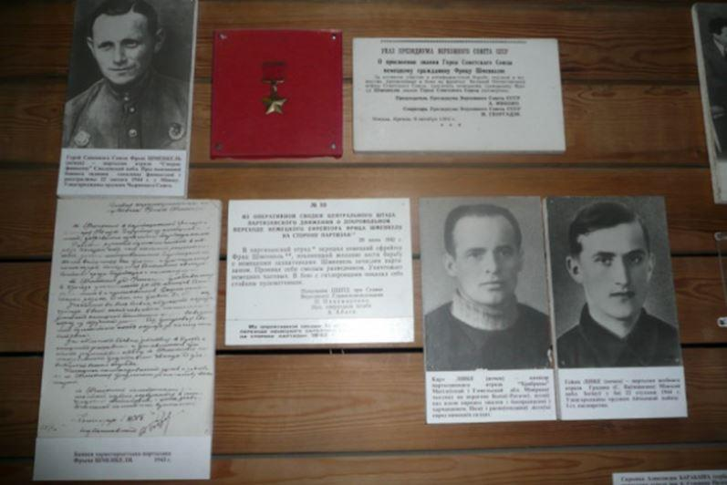
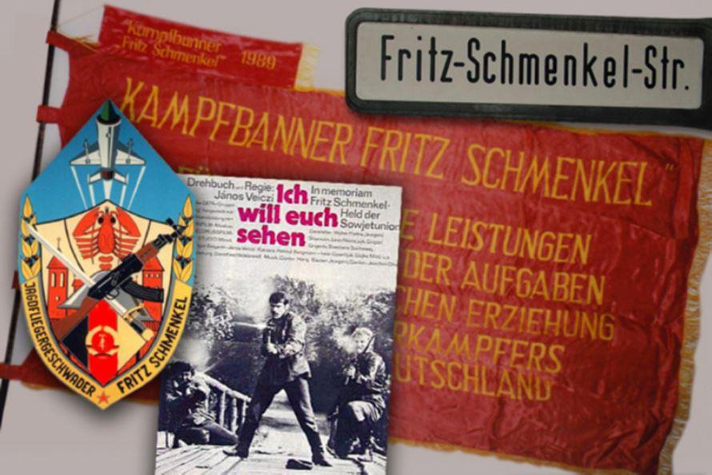

Fritz Hans Werner Schmenkel (tel est son nom complet) est né le 14 février 1916 dans la petite ville de Varzovo, près de la ville de Stettin (aujourd'hui Szczecin en Pologne). Le père de Fritz, membre du Parti communiste allemand, fut tué en 1932 lors d’une attaque nazie contre une réunion du parti. Shmenkel, qui faisait alors partie de l'Organisation de la jeunesse des communistes, avait juré de venger la mort de son père.
Le gars a travaillé dans une briqueterie jusqu'à ce qu'en 1938, il ait été appelé pour servir dans la Wehrmacht. Fritz faisait semblant d'être malade, mais des médecins expérimentés ont rapidement dévoilé la simulation. Face à l'évasion de la conscription, Shmenkel a été condamné à deux ans de travaux pénitentiaires.
Après l'attaque de l'Allemagne nazie contre l'URSS, il a décidé que le moment était venu d'apporter son aide aux « travailleurs soviétiques » dans la lutte contre Hitler. Le simulateur déclara qu'il était prêt à servir et après avoir terminé les cours d'état-major, il fut envoyé à l'automne 1941, dans la 186e division d'infanterie de la Wehrmacht en URSS.
En novembre 1941, F. Shmenkel quitta les rangs de l'armée fasciste avec un seul objectif : rejoindre les rangs de l'Armée rouge. Durant plusieurs semaines, il se cachait dans la région de Smolensk, tambourinait aux portes des habitants et ne parlait que trois mots en russe : « Lénine, Staline, Telman ». Et les portes se sont ouvertes…
Pour la nourriture et durant la nuit, Fritz a été aidé par les villageois. Le 17 février 1942, il est arrêté par un officier allemand et deux soldats du village de Kurganovo. Mais le même jour, le détachement de partisans « Mort au fascisme » entre dans le village et le commandant du détachement, l'ayant appris par l'officier allemand, prend Fritz à ses côtés. Au début, les partisans ne faisaient pas confiance à Fritz Shmenkel et voulaient même lui tirer dessus. Lors d'une des batailles avec les nazis, Fritz Shmenkel, après avoir reçu une arme, a tué un soldat allemand qui tirait avec précision sur la maison où se cachaient les partisans. Après cela, le détachement a commencé à lui faire confiance et il a eu une arme. Les partisans lui ont donné le nom « Ivan Ivanovicth ». Le détachement a agi sur le territoire des districts de Nelidovo et de Belsky de la région de Kalinine (aujourd'hui Tver) et dans la région de Smolensk.
En effectuant les missions de combat assignées par le commandement des partisans, Fritz Shmenkel a pris part à toutes les grandes opérations du détachement, faisant preuve d'un courage exceptionnel, de bravoure, d’héroïsme et d’intrépidité.
Le 6 mai 1942, dans une bataille contre des chars allemands, Shmenkel a incité le commandant du détachement à tirer sur des barils de carburant montés sur des chars. Le conseil de Fritz a été utile : grâce à cela, les partisans ont mis le feu à 5 chars ennemis. En août 1942, Fritz Schmenkel et un groupe de partisans vêtus d'uniformes allemands ont capturé onze policiers sans se battre et les ont remis à un tribunal de partisans.
Avant l'anniversaire de la Révolution d'Octobre, Shmenkel, vêtu de l'uniforme d'un général, a arrêté un train de wagons allemand sur la route et l'a envoyé dans la forêt. Dans le train, il y avait beaucoup de munitions et de nourriture.
Les nazis ont réussi à apprendre davantage sur ce soldat allemand qui a combattu dans le détachement des partisans et une grande récompense a été annoncée pour la tête de Shmenkel – 25 000 marks (pour comprendre le montant – une voiture à cette époque en Allemagne coûtait mille marks).
Au début de 1943, les Allemands ont commencé à mener des opérations punitives contre les partisans. Le détachement a été forcé de se diviser en petits groupes et de sortir de la bataille avec l'environnement. En mars 1943, le territoire sur lequel opérait le détachement fut libéré par les troupes soviétiques et les partisans ont été conduits à Moscou.
En juin 1943, Fritz Schmenkel fut détaché auprès du service de renseignement du front occidental. Là, il suivit une formation et fut nommé commandant adjoint du groupe de reconnaissance et de sabotage « Niva », prêt à effectuer des tâches spéciales dans la zone située au nord d'Orcha. Pour ses exploits, il lui a été décerné l'Ordre du Drapeau rouge.
En décembre 1943, F. Shmenkel avec Rozhkov et Vinogradov, officiers de renseignement, a été envoyé au front, après quoi la communication avec Fritz a été perdue. On apprit plus tard que les fascistes avaient arrêté Shmenkel au début de 1944, arrêté par la Gestapo.
Le 15 février 1944, une cour martiale fasciste a prononcé une sentence de mort. Une semaine plus tard, il a été abattu à Minsk.
De la dernière lettre à sa femme : « Pardonne-moi l'inquiétude que je t'ai causée en allant au bout du chemin choisi. Mais je n'abandonne pas mes affaires dans les dernières heures de ma vie. Je vais hardiment à mon exécution alors que je meurs pour une bonne cause ».
Malheureusement, dans la tourmente de la guerre, l'héroïsme du seul partisan dans l'histoire de la Grande Guerre patriotique – du soldat de la Wehrmacht – a été oublié. Seulement en 1961, dans les archives de l'URSS on a découvert des documents sur ses exploits. Par décret du Présidium du Soviet suprême de l'URSS du 6 octobre 1964, Fritz Shmenkel a été récompensé à titre posthume de l'Étoile du Héros de l'Union Soviétique et de l'Ordre de Lénine « pour sa participation active au mouvement partisan et pour son courage et son héroïsme ».
Le nom de cet homme courageux porte une rue de la ville de Nelidovo, mais aussi une rue de Berlin-Est (en 1976) : après la chute du socialisme en RDA, les fonctionnaires l'ont renommée Reishsteinstrasse. À Minsk, sur la place de la Liberté, on peut encore voir une plaque sur l'ancien bâtiment du service de sécurité nazi pendant les années d'occupation, avec un profil de Fritz et l'inscription : « Dans ce bâtiment, en février 1944, Fritz Shmenkel, citoyen allemand, participant actif à la lutte antifasciste, était condamné à mort ».
En 1978, un film « Ich will euch sehen » (Je veux te voir) retraçant la vie de Fritz Shmenkel a été tourné dans le studio de cinéma allemand DEFA.
Partager cette page